Probabilidade
Introdução
Este material cobre as Semanas 5 e 6 do plano de ensino: noções de probabilidade, axiomas, probabilidade condicional e sua aplicação, eventos independentes, distribuição normal e suas aplicações. Como complemento, a página também introduz as distribuições t de Student e F de Snedecor — que reaparecerão nas páginas de Testes de Hipóteses e ANOVA — sempre ilustradas com exemplos motivacionais de Agronomia e Zootecnia.
Slides originais disponíveis AQUI.
Para aprofundamento teórico, recomenda-se a leitura de Probabilidade: introdução e teoremas e Probabilidade condicional e Bayes (exceto os itens de Teorema da Probabilidade Total e Teorema de Bayes, fora do escopo desta disciplina), além do item 3 (Distribuição Normal) de Variáveis aleatórias contínuas e distribuições.
Noções de Probabilidade
Mas… por que estudar probabilidade?
Em resumo, de maneira simplificada:
\[ \text{Estatística} = \text{Matemática} + \text{Erro} \]
Se conseguimos estudar/medir esse “erro” com probabilidade, temos uma informação útil — é exatamente essa a ponte entre a Estatística Descritiva, que vimos até aqui, e a Estatística Inferencial, que veremos a partir de agora.
Conceitos fundamentais
- Probabilidade: mede o grau de incerteza associado a eventos aleatórios.
- Experimento aleatório: processo cujo resultado não é previsível com certeza.
- Espaço amostral (notação \(\Omega\) ou \(S\)): conjunto de todos os resultados possíveis de um experimento aleatório.
- Realização de um elemento do espaço amostral (notação \(x\)).
- Evento: subconjunto do espaço amostral (usualmente denotado por letras como \(A\), \(B\), \(C\), …).
Exemplo: a ocorrência de chuva em um dia de plantio é um evento aleatório — não sabemos com certeza se vai chover, mas podemos atribuir uma probabilidade a esse evento com base em dados históricos e modelos meteorológicos.
Um exemplo simples de espaço amostral e eventos climáticos: suponha que, para um determinado dia, temos \(P(A) = 0{,}4\) (40% de chance de chuva), \(P(B) = 0{,}5\) (50% de chance de sol) e \(P(C) = 0{,}1\) (10% de chance de neve). Note que \(P(A) + P(B) + P(C) = 1\) — os três eventos esgotam o espaço amostral (axioma de que a probabilidade do espaço amostral inteiro é igual a 1).
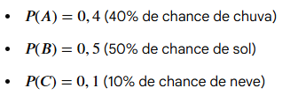
Um exemplo de referência (combinatória simples)
Para revisar a definição clássica de probabilidade (número de casos favoráveis sobre número de casos possíveis) em um espaço amostral finito, considere o seguinte exemplo, adaptado do material de referência bendeivide.github.io/book-estbasica: considere o nascimento de três bezerros em sequência, observando o sexo de cada um (macho ou fêmea). O espaço amostral tem \(n=8\) eventos simples, \(\Omega = \{(M,M,M), (M,M,F), (M,F,M), (F,M,M), (M,F,F), (F,M,F), (F,F,M), (F,F,F)\}\). Defina o evento \(A\): “nascer exatamente duas fêmeas” e o evento \(B\): “nascer pelo menos uma fêmea”.
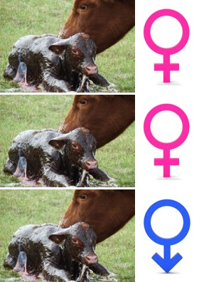
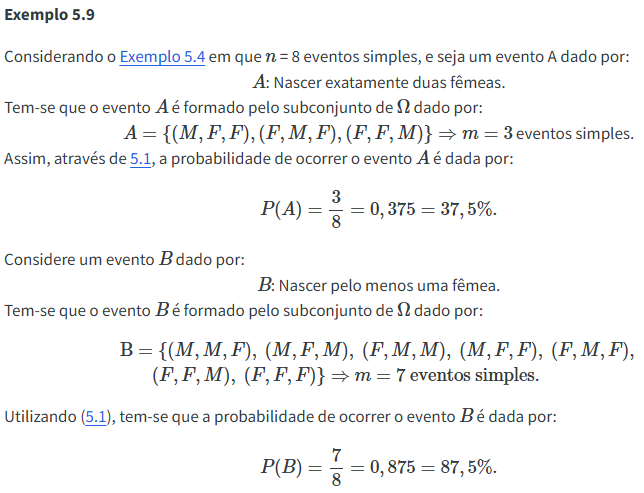
Esse tipo de raciocínio — contar quantos resultados do espaço amostral satisfazem o evento de interesse e dividir pelo total de resultados possíveis — é a base da definição clássica (ou “de Laplace”) de probabilidade, válida quando todos os resultados do espaço amostral são igualmente prováveis.
Probabilidade Condicional
A probabilidade condicional mede a probabilidade de um evento \(A\) ocorrer, dado que já sabemos que outro evento \(B\) ocorreu. Formalmente:
\[ P(A \mid B) = \frac{P(A \cap B)}{P(B)}, \quad \text{com } P(B) > 0 \]
onde \(A \cap B\) (a interseção de \(A\) e \(B\)) representa a ocorrência simultânea dos dois eventos:
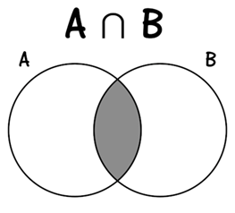
Exemplo: diagnóstico de doença em rebanho
Este é um dos exemplos mais importantes da disciplina para entender probabilidade condicional na prática, e ilustra por que interpretar corretamente o resultado de um teste diagnóstico não é tão trivial quanto parece.
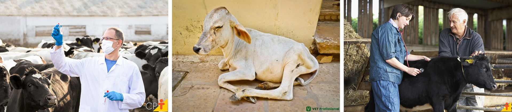
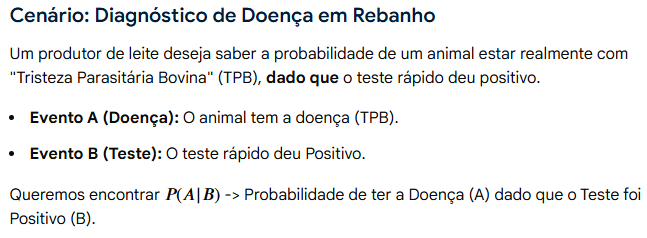
Considere um teste rápido para diagnóstico de Tristeza Parasitária Bovina (TPB) aplicado a 100 vacas de um rebanho. A tabela de contingência a seguir mostra o resultado real (com ou sem a doença) cruzado com o resultado do teste:
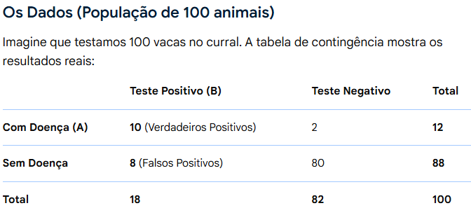
Repare que, dos 18 animais que testaram positivo, apenas 10 estão de fato doentes — os outros 8 são falsos positivos. Isso significa que, se um animal testar positivo, a probabilidade de ele estar realmente doente não é 100%, mesmo que o teste pareça “bom” à primeira vista (apenas 12 vacas do rebanho de fato têm a doença, e o teste “acerta” 90 dos 100 casos no total). O cálculo formal, usando a definição de probabilidade condicional:
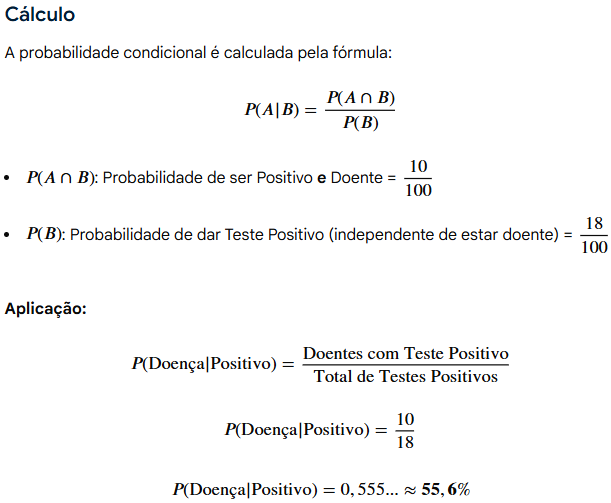
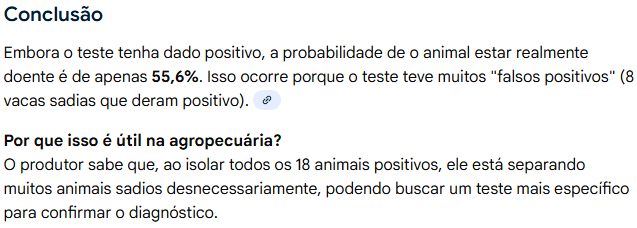
Por que isso é útil na agropecuária? O produtor sabe que, ao isolar todos os 18 animais que testaram positivo, está separando muitos animais sadios desnecessariamente — o que pode motivar a busca por um teste mais específico para confirmar o diagnóstico antes de tomar decisões custosas (como o descarte de um animal). Este mesmo tipo de raciocínio aparece em qualquer teste diagnóstico — de doenças humanas a testes de qualidade industrial — e é a essência do chamado paradoxo do falso positivo.
Para quem quiser se aprofundar no raciocínio por trás desse tipo de exemplo (na perspectiva do Teorema de Bayes), recomenda-se fortemente este vídeo do canal Veritasium.
Eventos Independentes
Dois eventos \(A\) e \(B\) são independentes quando a ocorrência de um não fornece nenhuma informação sobre a probabilidade de ocorrência do outro — ou seja, \(P(A \mid B) = P(A)\), o que equivale a \(P(A \cap B) = P(A) \times P(B)\).
Exemplo: o caso das sementes e da máquina
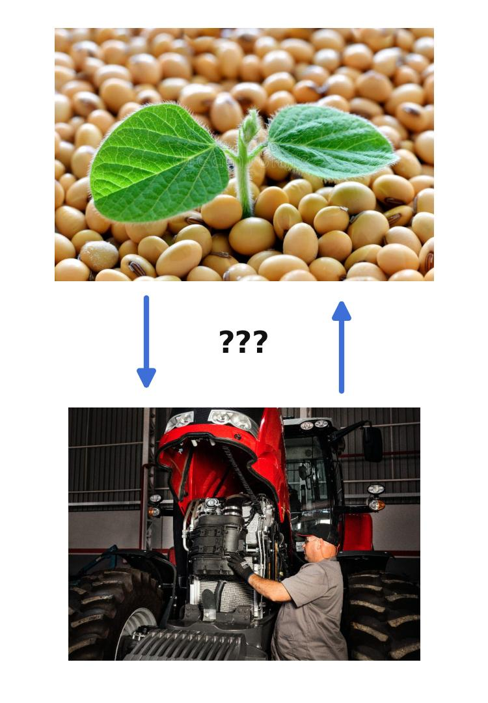
Um produtor rural quer saber a probabilidade de dois processos distintos darem certo no mesmo dia:
- Evento A (Germinação): uma semente de soja germinar em um vaso de teste, com taxa de germinação de 90% (\(P(A) = 0{,}9\)).
- Evento B (Manutenção): um trator, que acabou de sair da revisão, não apresentar falhas mecânicas, com probabilidade de 95% (\(P(B) = 0{,}95\)).
Por que são independentes? O fato da semente de soja germinar no laboratório não tem nenhuma relação biológica ou física com o funcionamento do motor do trator no campo. Saber que a semente germinou não dá nenhuma pista extra sobre se o trator vai quebrar ou não — logo, \(P(A \cap B) = P(A) \times P(B) = 0{,}9 \times 0{,}95 = 0{,}855\) (85,5% de chance de que ambos os processos deem certo no mesmo dia).
Esse tipo de raciocínio contrasta diretamente com o exemplo anterior (diagnóstico de doença), em que evento (ter a doença) e evento (testar positivo) são claramente dependentes — saber o resultado do teste muda nossa crença sobre a doença. Comparar os dois exemplos lado a lado ajuda a fixar a diferença entre eventos dependentes e independentes, um dos pontos mais frequentemente confundidos por quem está aprendendo probabilidade pela primeira vez.
Distribuição Normal
Para a parte conceitual da distribuição Normal, o material suplementar do Moodle é a referência principal, complementado por este vídeo e pelo item 3 (Distribuição Normal) de Variáveis aleatórias contínuas e distribuições. Gráficos interativos da distribuição normal estão disponíveis em istats.shinyapps.io/NormalDist, parte do portal artofstat.com/web-apps.
A distribuição normal (ou “curva em sino”) é a distribuição de probabilidade contínua mais importante da Estatística, caracterizada por dois parâmetros: a média \(\mu\) (que define o centro da curva) e o desvio padrão \(\sigma\) (que define sua dispersão). Uma observação \(X\) pode ser padronizada através do escore \(Z\):
\[ Z = \frac{X - \mu}{\sigma} \]
que informa a quantos desvios padrão a observação está distante da média — permitindo consultar tabelas de probabilidade padronizadas (tabela \(Z\)) independentemente da escala original da variável.
Aplicação: peso de bovinos ao abate
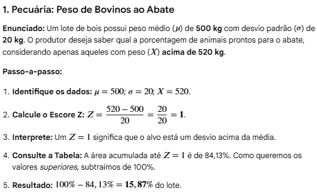
Enunciado: um lote de bois possui peso médio (\(\mu\)) de 500 kg, com desvio padrão (\(\sigma\)) de 20 kg. O produtor deseja saber qual a porcentagem de animais prontos para o abate, considerando apenas aqueles com peso (\(X\)) acima de 520 kg.
Passo a passo:
- Identifique os dados: \(\mu = 500\); \(\sigma = 20\); \(X = 520\).
- Calcule o escore \(Z\): \(Z = \dfrac{520 - 500}{20} = \dfrac{20}{20} = 1\).
- Interprete: \(Z=1\) significa que o valor-alvo está um desvio padrão acima da média.
- Consulte a tabela normal padrão: a área acumulada até \(Z=1\) é 84,13%. Como queremos os valores superiores, subtraímos de 100%.
- Resultado: \(100\% - 84{,}13\% = 15{,}87\%\) do lote está pronto para o abate segundo esse critério.
Este mesmo procedimento — padronizar com o escore \(Z\) e consultar a tabela normal — é a base de praticamente todas as aplicações da distribuição normal que veremos ao longo da disciplina, incluindo os testes de hipótese das próximas semanas (teste \(z\)) e o cálculo de intervalos de confiança. Vale a pena explorar o aplicativo NormalDist para visualizar como a área sob a curva muda conforme alteramos \(\mu\), \(\sigma\) e os limites de integração.
Outros exemplos motivacionais
O mesmo procedimento (calcular o escore \(Z\) e consultar a tabela normal) se aplica a praticamente qualquer variável contínua que se distribua aproximadamente como um “sino” em torno de uma média — o que é extremamente comum em variáveis biológicas mensuradas na Agronomia e na Zootecnia.
Exemplo (Agronomia) — produtividade de soja. Em uma lavoura, a produtividade de soja segue aproximadamente uma distribuição normal com média \(\mu = 55\) sacas/ha e desvio padrão \(\sigma = 6\) sacas/ha. O produtor quer saber qual a proporção da área plantada com produtividade insatisfatória, definida como abaixo de 45 sacas/ha. O escore \(Z = \dfrac{45-55}{6} = -1{,}67\), e a área abaixo de \(Z=-1{,}67\) na tabela normal é de aproximadamente 4,75% — ou seja, cerca de 4,75% da lavoura deve produzir abaixo do patamar considerado satisfatório.
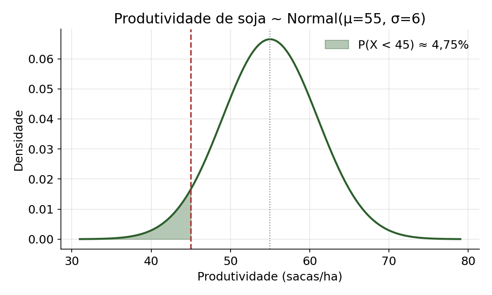
Exemplo (Zootecnia) — produção de leite. Em um rebanho leiteiro, a produção diária de leite por vaca segue aproximadamente uma distribuição normal com média \(\mu = 25\) L/dia e desvio padrão \(\sigma = 4\) L/dia. O produtor quer identificar vacas de baixo desempenho, definidas como as que produzem menos de 18 L/dia — candidatas a serem investigadas (saúde, nutrição) ou descartadas do plantel. O escore \(Z = \dfrac{18-25}{4} = -1{,}75\), e a área abaixo de \(Z=-1{,}75\) é de aproximadamente 4,01% — ou seja, cerca de 4% do rebanho se enquadra nesse critério de baixo desempenho.
Repare que, nos dois exemplos, o raciocínio é idêntico ao do exemplo dos bovinos acima — muda apenas o contexto (grão vs. animal) e os valores de \(\mu\), \(\sigma\) e do ponto de corte. Essa é a grande vantagem de padronizar com o escore \(Z\): uma única tabela (ou um único software) resolve qualquer problema de distribuição normal, independentemente da escala ou unidade da variável original.
Distribuição t de Student
Até aqui, sempre assumimos que o desvio padrão populacional \(\sigma\) era conhecido — o que raramente acontece na prática. Quando \(\sigma\) é desconhecido e precisa ser estimado a partir do desvio padrão amostral \(s\), e a amostra é pequena (regra prática: \(n \leq 30\), já usada na seção de Testes de Hipóteses), o escore padronizado não segue mais exatamente uma distribuição normal — ele passa a seguir uma distribuição t de Student, com \(n-1\) graus de liberdade (gl):
\[ T = \frac{\bar{X} - \mu}{s/\sqrt{n}} \sim t_{(n-1)} \]
A distribuição t de Student tem o mesmo formato de sino, centrado em 0, mas com caudas mais pesadas do que a normal — refletindo a incerteza adicional de estimarmos \(\sigma\) a partir de uma amostra pequena. Quanto maior o número de graus de liberdade (ou seja, quanto maior a amostra), mais a distribuição t se aproxima da normal padrão — para \(n>30\), a diferença já é praticamente desprezível, o que justifica a “regra do \(n>30\)” usada para decidir entre o teste \(z\) e o teste \(t\).
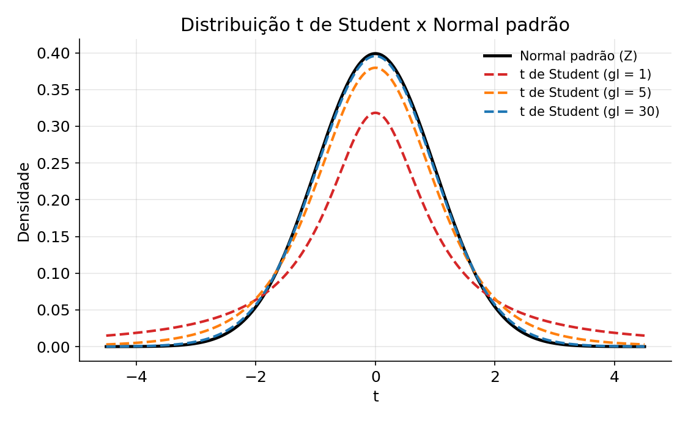
Exemplo (Agronomia): teor de proteína em silagem
Um pesquisador coleta \(n=10\) amostras de silagem de milho e mede o teor de proteína bruta, obtendo média amostral \(\bar{X} = 8{,}2\%\) e desvio padrão amostral \(s = 0{,}6\%\). Como a variância populacional é desconhecida e a amostra é pequena (\(n=10\)), a distribuição de referência para construir um intervalo de confiança para a média populacional é a t de Student, com \(gl = n - 1 = 9\) graus de liberdade — e não a normal padrão.
O valor crítico \(t_{0{,}975; \, 9} = 2{,}262\) é maior do que o correspondente valor crítico da normal padrão, \(z_{0{,}975} = 1{,}96\) — essa diferença é exatamente o “preço” pago pela incerteza extra de estimar \(\sigma\) com uma amostra pequena. O intervalo de confiança de 95% para a média populacional é dado por:
\[ IC(\mu; 95\%) = \bar{X} \pm t_{0{,}975;9} \times \frac{s}{\sqrt{n}} = 8{,}2 \pm 2{,}262 \times \frac{0{,}6}{\sqrt{10}} = 8{,}2 \pm 0{,}43 \]
ou seja, o intervalo de confiança de 95% para o teor médio de proteína bruta na silagem é aproximadamente \((7{,}77\%; \, 8{,}63\%)\).
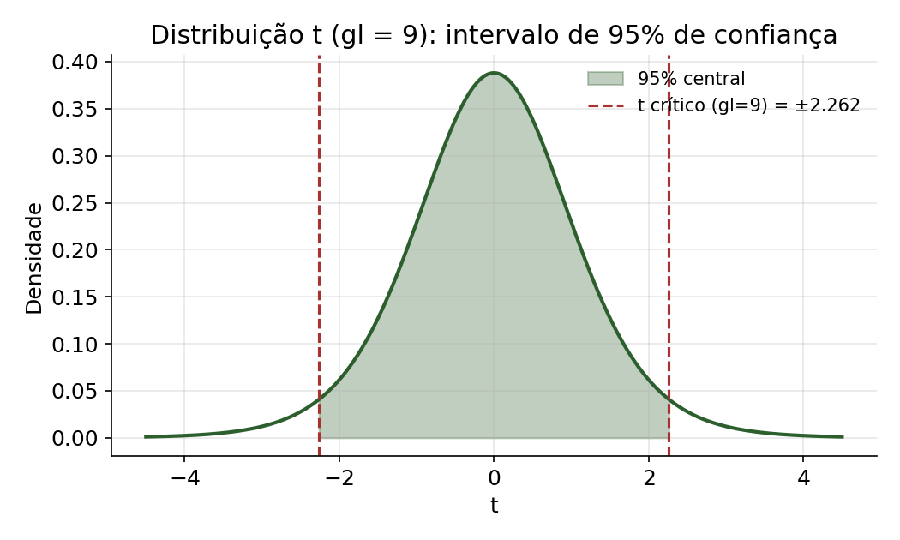
Esse mesmo raciocínio — usar a distribuição t ao invés da normal quando a amostra é pequena e \(\sigma\) é desconhecido — é a base do teste \(t\) de Student que veremos na página de Teste de Hipóteses: Teste z e Teste t de Student, e reaparece constantemente em experimentos agronômicos e zootécnicos, nos quais o número de repetições (parcelas experimentais, animais) costuma ser pequeno. Um aplicativo interativo para visualizar a distribuição t está disponível em istats.shinyapps.io/tdist.
Distribuição F de Snedecor
A distribuição F de Snedecor surge naturalmente quando comparamos a variabilidade (variância) de duas populações ou de dois grupos experimentais. Ela é definida como a razão entre duas variâncias amostrais independentes:
\[ F = \frac{s_1^2}{s_2^2} \sim F_{(gl_1, \, gl_2)}, \qquad gl_1 = n_1 - 1, \;\; gl_2 = n_2 - 1 \]
onde \(gl_1\) e \(gl_2\) são os graus de liberdade associados, respectivamente, ao numerador e ao denominador da razão. Diferentemente da normal e da t (simétricas em torno de zero), a distribuição F só assume valores positivos (afinal, é uma razão de variâncias, que são sempre não negativas) e é assimétrica à direita, com o formato exato dependendo dos dois graus de liberdade:
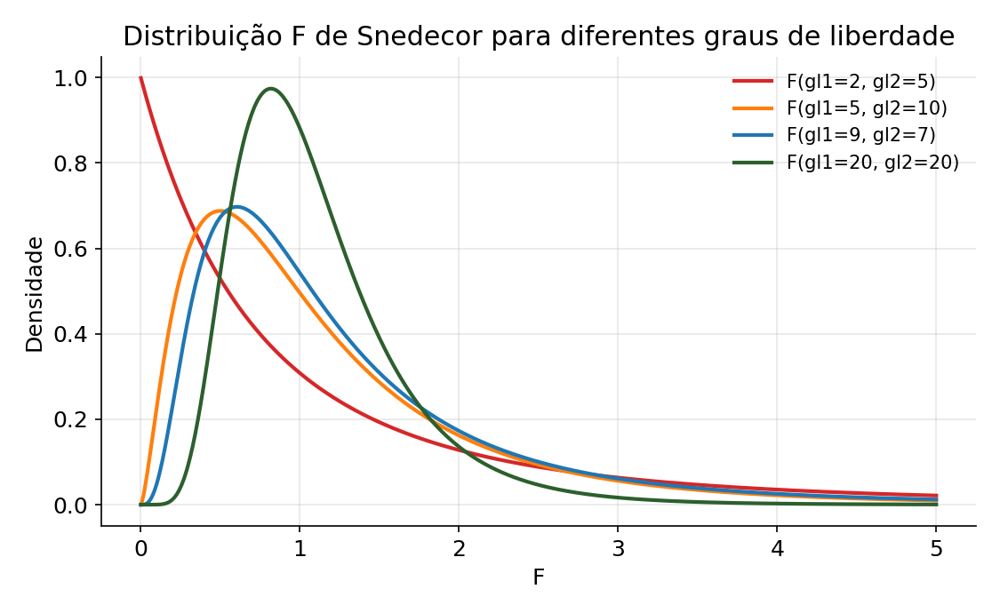
Exemplo (Zootecnia): comparação da variabilidade de ganho de peso entre duas rações
Um zootecnista testa duas rações (A e B) para o ganho de peso de suínos em fase de terminação. Na ração A, \(n_1 = 10\) animais, com variância amostral \(s_1^2 = 25 \text{ kg}^2\); na ração B, \(n_2 = 8\) animais, com variância amostral \(s_2^2 = 9 \text{ kg}^2\). Antes de comparar as médias de ganho de peso entre as duas rações (por exemplo, com um teste \(t\)), é importante verificar se as variâncias dos dois grupos podem ser consideradas homogêneas — um pressuposto do teste \(t\) com variâncias iguais (e também da ANOVA, como vimos na página anterior).
Calcula-se a estatística F como a razão entre a maior e a menor variância amostral:
\[ F = \frac{s_1^2}{s_2^2} = \frac{25}{9} = 2{,}78, \qquad gl_1 = 9, \;\; gl_2 = 7 \]
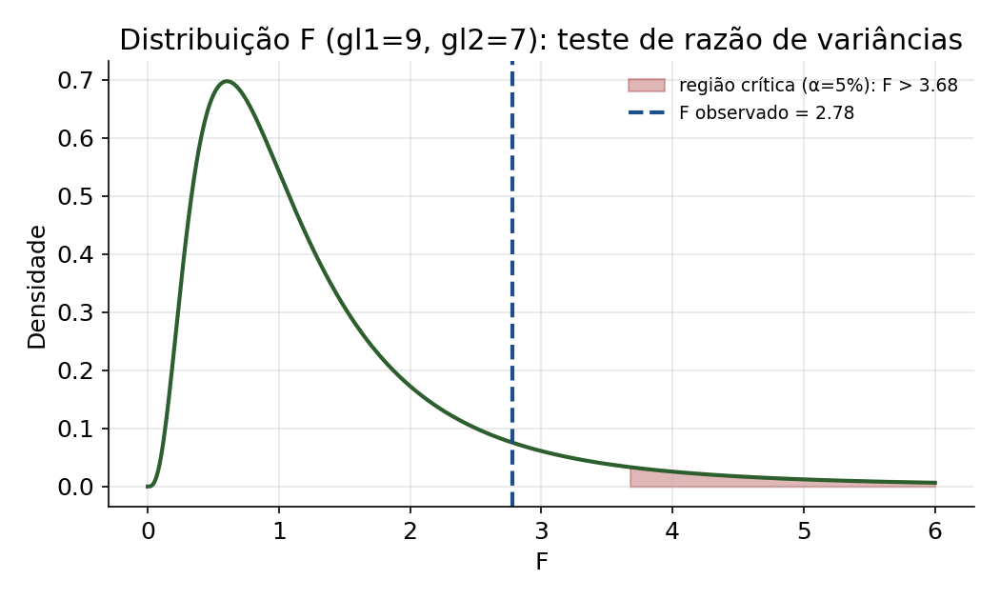
Consultando a tabela F (ou calculando em R com qf(0.95, 9, 7)), o valor crítico é \(F_{0{,}05; \, 9,7} \approx 3{,}68\). Como o F observado (\(2{,}78\)) é menor que o F crítico (\(3{,}68\)), não há evidência suficiente para rejeitar a hipótese de que as variâncias do ganho de peso são homogêneas entre as duas rações — é razoável prosseguir com um teste \(t\) assumindo variâncias iguais.
Esta é exatamente a mesma lógica que sustenta o teste F das tabelas de ANOVA vistas na página de Teste de Hipóteses: ANOVA: lá, o F comparava a variabilidade entre tratamentos com a variabilidade dentro dos tratamentos (o erro experimental); aqui, comparamos diretamente a variabilidade entre dois grupos. Em ambos os casos, um valor de F “grande” (muito maior que 1) indica que a razão entre as duas fontes de variabilidade dificilmente ocorreria só por acaso. Um aplicativo interativo para visualizar a distribuição F está disponível em istats.shinyapps.io/FDist.